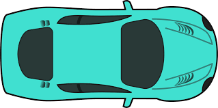
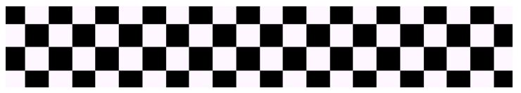

Code Topic: CSS Animations and Transitions with JavaScript
Animations and transitions triggered with JavaScript.
Demo 1
Animations on web pages are done the most simply using
classes with a "transitions" property in the CSS. These classes can be toggled
using JavaScript in response to something like a button click.


function race() {
var carElm = document.getElementById("raceCar");
carElm.classList.add("horizontalTranslate");
}
function resetRace() {
var carElm = document.getElementById("raceCar");
carElm.classList.remove("horizontalTranslate");
}
You'll notice in the CSS above (on the right), there are actually
several transition properties. These are for different browsers using different engines
to display content: webkit is used by Chrome and Safari, moz by Firefox, and o by Opera.
The regular "transition" property will still work in these browsers in most cases, but
it is always good practice to try to make sure your webpage will work across as many
browsers as you're able to support.
Demo 2
Animations can also respond to mouse events. In the example below,
move the mouse over the circle to change its direction. Take note that simply placing
the mouse in the path of the circle will not fire the mouseover event. A mouseover or
mouseout event is fired and checked on a mousemove event. The circle is a bit jumpy,
but with more sophisticated code it can be smoothened to grab the circle's position
on the mouseover event when setting the direction change.
JavaScript
var clockwise = true;
var toggleWait = false;
function toggleCircleDirection() {
console.log("toggling direction");
var circle = document.getElementById("circle");
if (clockwise) {
circle.classList.remove("clockwise");
circle.classList.add("counterclockwise");
} else {
circle.classList.add("clockwise");
circle.classList.remove("counterclockwise");
}
clockwise = !clockwise;
}
function setCircleListeners() {
document.getElementById("circle").addEventListener("mouseover", function () {
if (!toggleWait) {
toggleWait = true;
toggleCircleDirection();
}
});
document.getElementById("circle").addEventListener("mouseout", function () {
toggleWait = false;
});
}
CSS
#circle {
border-radius: 50%;
margin-left: 40%;
margin-top: 20%;
width: 50px;
height: 50px;
position: relative;
background-color: lightblue;
border: 1px solid black;
transform: rotate(45deg) translate(150px) rotate(-45deg);
}
.clockwise {
-webkit-animation: orbit 4s linear infinite;
-moz-animation: orbit 4s linear infinite;
-o-animation: orbit 4s linear infinite;
animation: orbit 4s linear infinite;
}
.counterclockwise {
-webkit-animation: orbitR 4s linear infinite;
-moz-animation: orbitR 4s linear infinite;
-o-animation: orbitR 4s linear infinite;
animation: orbitR 4s linear infinite;
}
@-webkit-keyframes orbit {
from { -webkit-transform: rotate(0deg) translateX(150px) rotate(0deg); }
to { -webkit-transform: rotate(360deg) translateX(150px) rotate(-360deg); }
}
@-moz-keyframes orbit {
from { -moz-transform: rotate(0deg) translateX(150px) rotate(0deg); }
to { -moz-transform: rotate(360deg) translateX(150px) rotate(-360deg); }
}
@-o-keyframes orbit {
from { -o-transform: rotate(0deg) translateX(150px) rotate(0deg); }
to { -o-transform: rotate(360deg) translateX(150px) rotate(-360deg); }
}
@keyframes orbit {
from { transform: rotate(360deg) translateX(150px) rotate(-360deg); }
to { transform: rotate(0deg) translateX(150px) rotate(0deg); }
}
@-webkit-keyframes orbitR {
from { -webkit-transform: rotate(360deg) translateX(150px) rotate(-360deg); }
to { -webkit-transform: rotate(0deg) translateX(150px) rotate(0deg); }
}
@-moz-keyframes orbitR {
from { -moz-transform: rotate(360deg) translateX(150px) rotate(-360deg); }
to { -moz-transform: rotate(0deg) translateX(150px) rotate(0deg); }
}
@-o-keyframes orbitR {
from { -o-transform: rotate(360deg) translateX(150px) rotate(-360deg); }
to { -o-transform: rotate(0deg) translateX(150px) rotate(0deg); }
}
@keyframes orbitR {
from { transform: rotate(0deg) translateX(150px) rotate(0deg); }
to { transform: rotate(360deg) translateX(150px) rotate(-360deg); }
}
The CSS for this is modified code from Zoltan's work
here.
Demo 3
There are also tools available to check and modify the
state of an animation in the middle of the process. Let's modify the circle
from the previous demo. This demo uses a much simpler version of reversing
the direction of the animation, but as you'll notice it's even more jumpy
than the previous demo.
JavaScript
function toggleDemo3Pause() {
var demoElm = document.getElementById("circle2");
var button = document.getElementById("btnDemo3Pause");
if (button.innerText == "Pause") {
demoElm.style.animationPlayState = "paused";
button.innerText = "Play";
} else if (button.innerText == "Play") {
demoElm.style.animationPlayState = "running";
button.innerText = "Pause";
}
}
function toggleDemo3Reverse() {
var demoElm = document.getElementById("circle2");
var button = document.getElementById("btnDemo3Reverse");
if (button.innerText == "Reverse") {
demoElm.style.animationDirection = "reverse";
button.innerText = "Normal";
} else if (button.innerText == "Normal") {
demoElm.style.animationDirection = "normal";
button.innerText = "Reverse";
}
}
function speedUpDemo3() {
var demoElm = document.getElementById("circle2");
var styles = window.getComputedStyle(demoElm, null);
var animation = parseInt(styles["animation-duration"]);
if (animation > 1) {
animation--;
demoElm.style.animationDuration = animation + "s";
}
}
function slowDownDemo3() {
var demoElm = document.getElementById("circle2");
var styles = window.getComputedStyle(demoElm, null);
var animation = parseInt(styles["animation-duration"]);
animation++;
demoElm.style.animationDuration = animation + "s";
}
CSS
The CSS for this demo was slightly modified.
Rather than using the single "animation" property in CSS (in the
"clockwise" class in the previous demo), which contains all of
the other animation attributes in a single line, the CSS
properties were split up to make modifying them easier.